SAP EWM이란?
물류 창고 운영을 최적화하는 스마트 창고 관리 솔루션입니다. 재고, 피킹, 출고 등 복잡한 물류 프로세스를 실시간으로 통합 관리합니다. 기업은 정확성과 효율성을 높여 물류 비용을 절감하고 안정적 운영을 실현합니다.
선진화된 물류 프로세스를 만나보세요.
웅진은 Warehouse Management(WM)에 강점이 있습니다.
국내 유명 유통사들의 레퍼런스를 바탕으로 강력한 SAP EWM을 제공합니다. 웅진만의 4대 추진전략과 3대 핵심목표를 바탕으로 통합물류시스템의 To-Be 운영모델에 기반한 물류시스템을 성공적으로 구현 하실 수 있습니다.
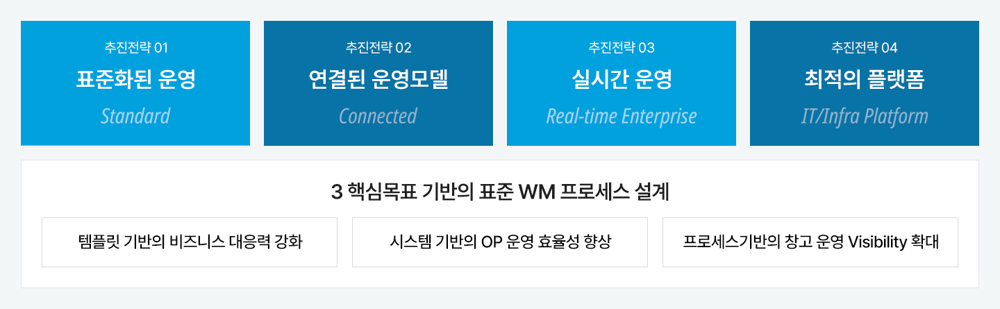
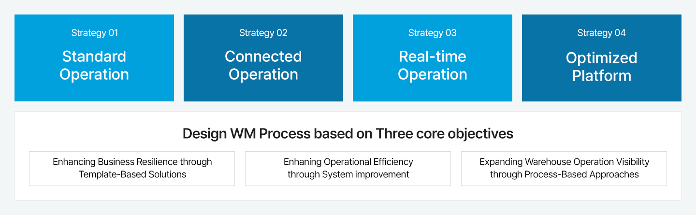
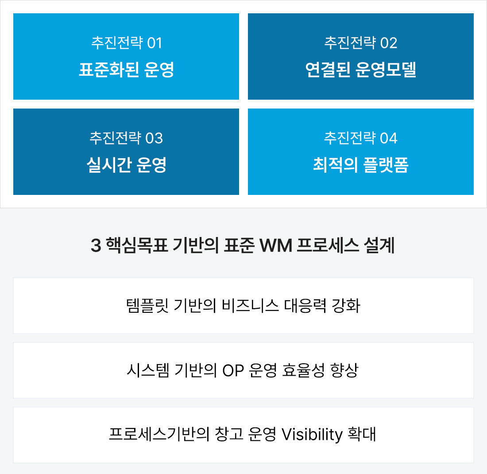
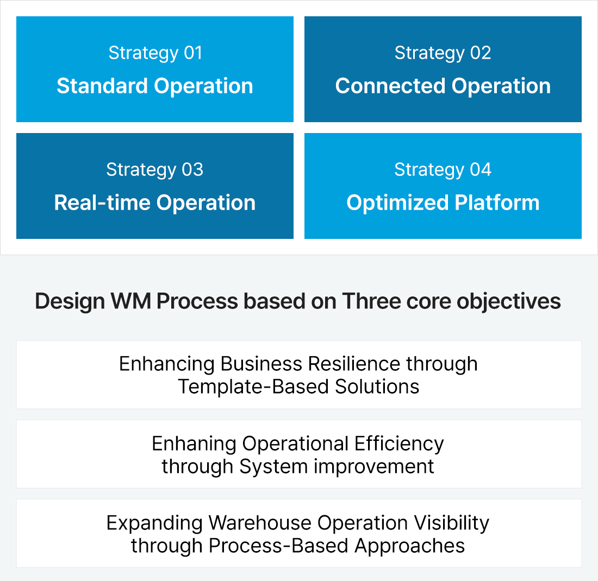
SAP EWM 시스템 구성도
EWM은 ERP-WM의 기능을 확장한(Extended) 솔루션으로 SAP의 20년 역사와 안정성이 확보된 시스템입니다.
EWM은 ERP와 별도 서버로 설치할 수 있으며, 물류기업 및 유통사의 물류센터 관리에 적합합니다.
SAP EWM의 유연한 프로세스를 통해 복잡한 창고 관리를 해결 할 수 있습니다.
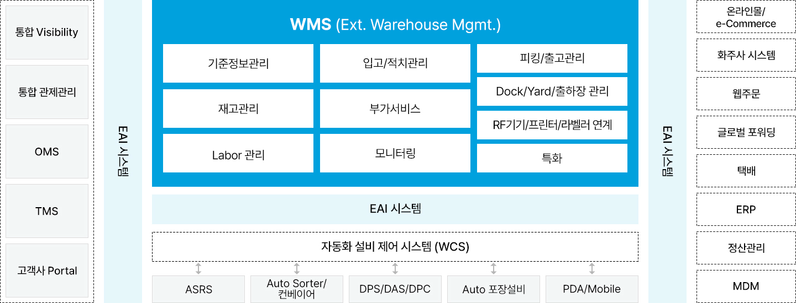
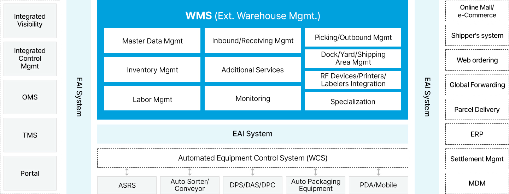
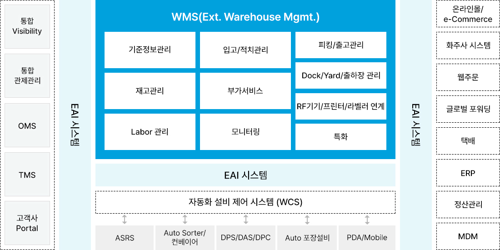
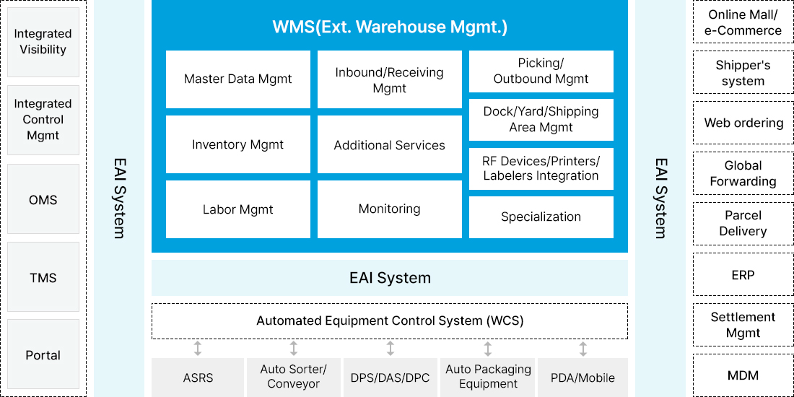
기대효과
EWM 시스템 구축은 전사차원의 통합 관점을 기반으로 각 물류센터 별 생산성 향상과 창고비용절감의 효과를 기대할 수 있습니다.
물류프로세스의 표준화는 생산성과 정확성을 향상시키고 오류를 감소시킬 수 있습니다. 여기에 선도기업의 설문 결과에 따른 정량적 효과까지 기대할 수 있습니다.
정성적 기대효과
전사 통합 관점
- 통합 물류시스템에 대한 Architecture 구성
- 사업영역 확대를 위한 표준 플랫폼 구성
- 단일 솔루션 기반의 사후 유지보수 및 업그레이드 용이성 확보
물류 시스템 구축 관점
- 표준 프로세스 기반의 물류센터 운용성 확보
- 판매 상품의 결품 최소화, 재고 가시성 확보
- 신속/정확 배송, 고객주문 대응력 강화
- 안정적 물량 공급력 제고
- 고객 시스템 연계 및 데이터 Visibility를 제공함으로 신뢰성 확보
정량적 기대효과
정량적 효과
- 재고정확도 향상 : 95% → 99.5%
- 중복재고 감소 : 10% ~ 20%
- 실물재고 감소를 통한 비용절감 : 75%
- 생산성 향상으로 인건비 절감 : 20% ~ 40%
- 창고관리 간접인건비 절감 : 15% ~ 25%
- 창고 공간활용 증가 : 10% ~ 20%
절감 및 효과 영역
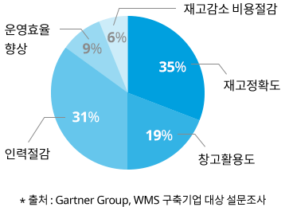
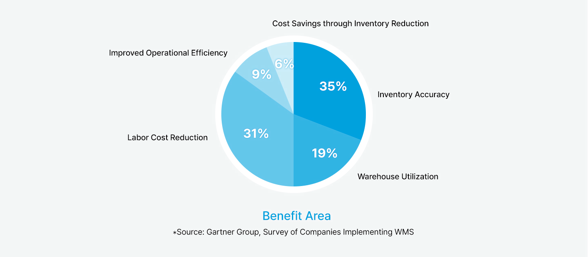
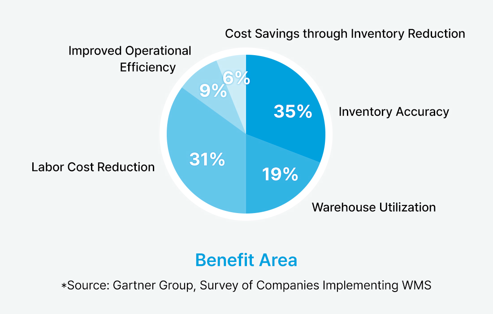
CONTACT CENTER
Tel : 02-2119-1110
E-mail : woongjin@woongjin.com
 BMW코리아BMW Korea on DMS
BMW코리아BMW Korea on DMS
BMW코리아는 비즈니스 확대에 따른 효율적 운영을 위해 서비스의 신뢰성과 확장성이 중요해졌습니다. 클라우드의 장점인 글로벌 비즈니스의 확대, 빠른 대응 및 안정적인 운영을 위해 웅진과 함께 AWS 클라우드 기반의 DMS를 도입했습니다.
[의의]
- EKS 클러스터에 자동화되고 신뢰할 수 있는 인프라를 구현하여 보다 확장성 있는 서비스 제공
- 판매 시스템 업그레이드 및 안정성 보장